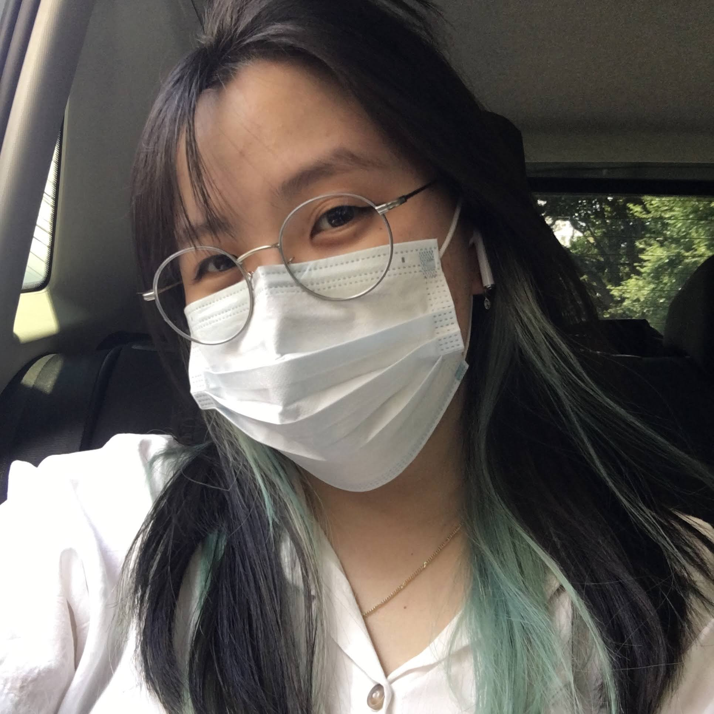

Portfólio
Isabela Harumi Ueti Maeda
Sobre mim
Eu sou a Harumi, tenho 24 anos e sou de
São Paulo, SP. Fiquem à vontade para me chamar de
Haru, Há ou
haruchu (que é meu nick nos joguinhos!).
Me formei em Design em 2019 e antes disso, fiz um
técnico em Comunicação Visual - sempre tive um lado
criativo, mas parei de me encontrar na área quando trabalhei em uma
startup (na área de Marketing) e conheci a rotina do pessoal
de tecnologia. Fiquei encantada com a produção e como as coisas podem
acontecer rápido dentro da área.
Sobre mim, gosto muito de joguinhos eletrônicos (atualmente só jogo lolzinho e vavá, mas às vezes perco umas boas horas em Terraria ou em uns single player), aprender idiomas (em 2022 consegui passar no nível 5 na prova de proficiência de japonês estudando por conta própria) e fazer coisas manuais/diy, como encadernação, bordado, velas, sabonetes e etc. Também me interesso muito pela cultura asiática de modo geral, e ultimamento venho criando mais interesse pelos países do sudeste asiático, pensando em, um dia, fazer um mochilão por lá.
Habilidades
Hard Skills |
Soft Skills |
Idiomas |
|
|---|---|---|---|
| Conhecimentos em Design | Proatividade |
 Português
Português
|
Nativo |
| Adobe Photoshop e Adobe Illustrator | Teste |
 Inglês
Inglês
|
Avançado |
| HTML e CSS | teste |
 Japonês
Japonês
|
Básico |